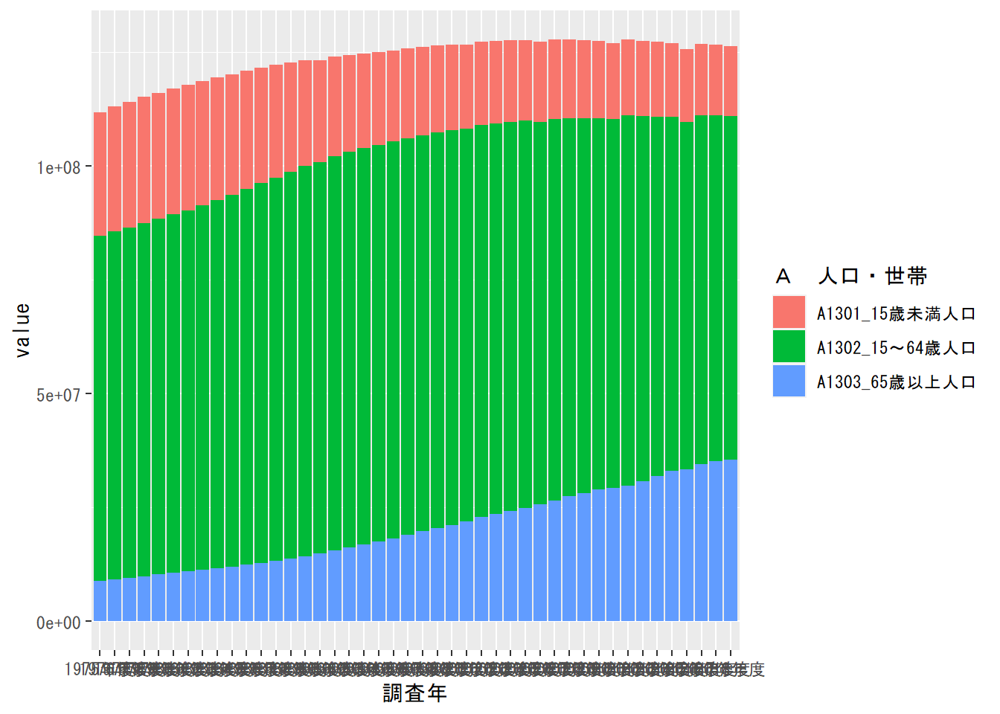
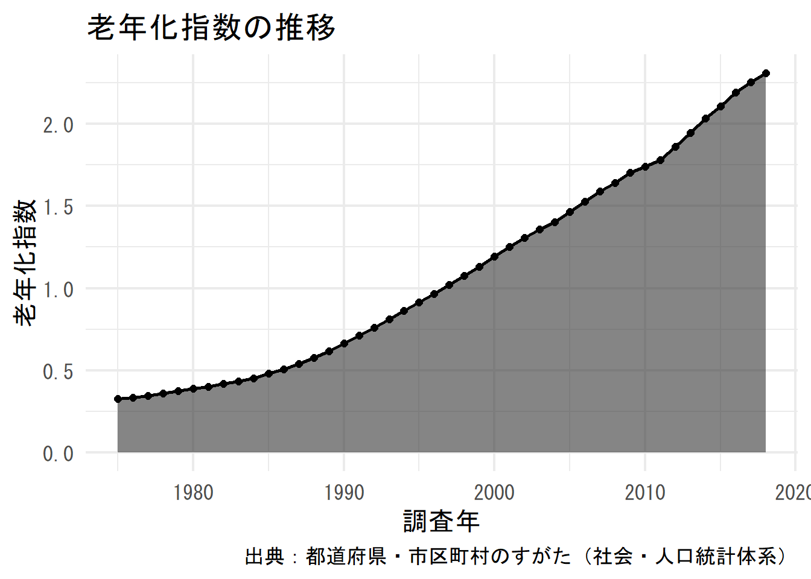

8.2 【例1】少子高齢化の可視化
e-Statのデータを用いて、少子高齢化の推移を可視化してみます。キーワード「人口」で検索して、「社会・人口統計体系」→「都道府県データ」→「年度次」
と辿り「Ａ 人口・世帯」の「API」をクリックするとデータのIDが0000010101であることが分かります。
メタデータを取得してデータの概要を確認します。
## [1] "tab" "cat01" "area" "time" ".names"## # A tibble: 6 x 4
## `@code` `@name` `@level` `@unit`
## <chr> <chr> <chr> <chr>
## 1 A1101 A1101_総人口 1 人
## 2 A110101 A110101_総人口（男） 1 人
## 3 A110102 A110102_総人口（女） 1 人
## 4 A1102 A1102_日本人人口 1 人
## 5 A110201 A110201_日本人人口（男） 1 人
## 6 A110202 A110202_日本人人口（女） 1 人## # A tibble: 7 x 4
## `@code` `@name` `@level` `@unit`
## <chr> <chr> <chr> <chr>
## 1 A1301 A1301_15歳未満人口 1 人
## 2 A130101 A130101_15歳未満人口（男） 1 人
## 3 A130102 A130102_15歳未満人口（女） 1 人
## 4 A1302 A1302_15～64歳人口 1 人
## 5 A130201 A130201_15～64歳人口（男） 1 人
## 6 A130202 A130202_15～64歳人口（女） 1 人
## 7 A1303 A1303_65歳以上人口 1 人## # A tibble: 48 x 3
## `@code` `@name` `@level`
## <chr> <chr> <chr>
## 1 00000 全国 1
## 2 01000 北海道 2
## 3 02000 青森県 2
## 4 03000 岩手県 2
## 5 04000 宮城県 2
## 6 05000 秋田県 2
## 7 06000 山形県 2
## 8 07000 福島県 2
## 9 08000 茨城県 2
## 10 09000 栃木県 2
## # ... with 38 more rows以上の情報から、以下のようにデータを取得します。cdCat01From = "A1301"とcdCat01To = "A1303"によって、「15歳未満」から「65歳以上」の集計カテゴリを取得するようにしています。cdArea = "00000"は「全国」を指定しています。
population <- estat_getStatsData(
appId, "0000010101", cdCat01From = "A1301",
cdCat01To = "A1303", cdArea = "00000"
)## Fetching record 1-308... (total: 308 records)このデータから、積み上げ縦棒グラフを作成します。
population %>%
filter(str_length(cat01_code) == 5) %>%
ggplot(aes(調査年, value, fill = `Ａ 人口・世帯`)) +
geom_bar(stat = "identity")
見栄えを以下のように修正します。
- 年齢区分の表示「A1301_１５歳未満人口」→「15歳未満」
- 調査年の表示：切れのいい数字のみ（日付型に変換）
- 人口の目盛：指数表示→千人単位の通常表示
- テーマ：minimal
- y軸ラベルの設定：「value」→「人口[千人]」
population %>%
filter(str_length(cat01_code) == 5) %>%
separate(`Ａ 人口・世帯`, c("code", "年齢区分"), sep = "_") %>%
mutate(code = order(code, decreasing = TRUE)) %>%
mutate(年齢区分 = stringi::stri_trans_nfkc(年齢区分)) %>%
mutate(年齢区分 = str_remove(年齢区分, "人口")) %>%
mutate(年齢区分 = fct_reorder(年齢区分, code)) %>%
mutate(調査年 = str_remove(調査年, "年度")) %>%
mutate(調査年 = lubridate::ymd(調査年, truncated = 2)) %>%
mutate(value = value / 1000) %>%
ggplot(aes(調査年, value, fill = 年齢区分)) +
geom_bar(stat = "identity", alpha = 0.8) +
theme_minimal(base_size = 16) +
theme(legend.position = "bottom") +
scale_y_continuous(name = "人口[千人]", labels = scales::comma)続いて、65歳以上の人口と15歳未満の人口の比を取った「老年化指数」を計算し、折れ線グラフで指数の推移を可視化してみます。
population %>%
filter(str_length(cat01_code) == 5) %>%
select(-`Ａ 人口・世帯`) %>%
pivot_wider(names_from = cat01_code, values_from = value) %>%
mutate(老年化指数 = A1303 / A1301) %>%
mutate(調査年 = str_remove(調査年, "年度")) %>%
mutate(調査年 = lubridate::ymd(調査年, truncated = 2)) %>%
ggplot(aes(調査年, 老年化指数)) +
geom_area(alpha = 0.6) +
geom_point(size = 2) +
geom_line(size = 1) +
theme_minimal(base_size = 16) +
labs(title = "老年化指数の推移",
caption = "出典：都道府県・市区町村のすがた（社会・人口統計体系）")